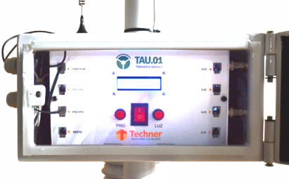

El servicio TAU cuenta con un equipo electrónico que se emplaza físicamente en el lugar a monitorea. El mismo posee una unidad central de procesamiento la cual es gobernada por un micro-controlador responsable de coordinar la recolección de datos por parte de los sensores.  La información recolectada es decodificada, almacenada y enviada a través de un módulo GSM/GPRS a través de las redes de telefonía celular a un servidor el que se encargará de almacenar y procesar la misma. El módulo GSM/GPRS antes nombrado cuenta con la habilidad de comunicarse mediante las tecnologías SMS y GPRS de acuerdo al rendimiento y disponibilidad que se cuente en el lugar.
El equipo electrónico de TAU tiene una completa autonomía energética. Principalmente, consta de un de un panel solar, el cual, alimenta a una batería de 12 volts que se encarga de energizar todo el sistema. Sumado a esto, se cuenta con la posibilidad de conectar el equipo a la red eléctrica o también a la batería de un vehículo.
Además TAU posee un Dispositivo GPS que le brinda la ubicación exacta de la misma en cualquier momento, información que toma especial relevancia en aplicaciones donde la geo-referenciación de los datos es muy importante.